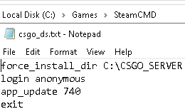
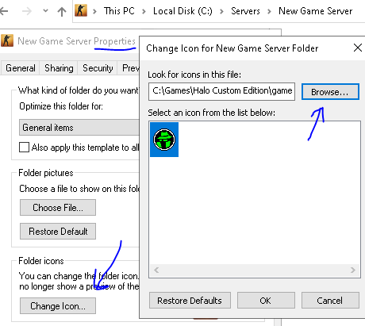
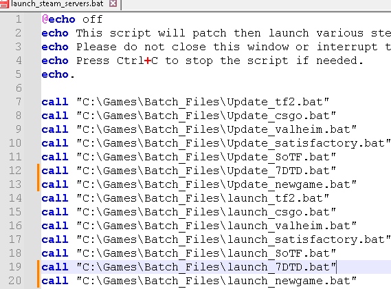
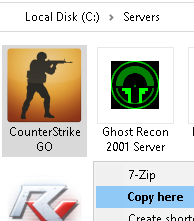
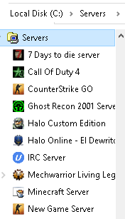
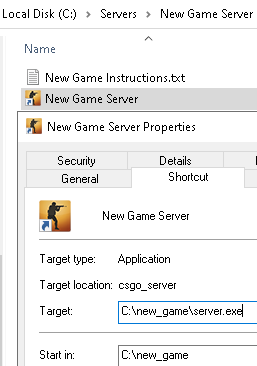

Steam Servers
Removing Servers from Startup
To remove a server from the startup list, simply run
C:\Servers\Edit Batch Launchers.py and
uncheck the servers you don't want auto-launching with
Windows.
This will add a "REM" line in front of that game's launcher
in the launch servers batch files so it skips those lines.

Adding a New Steam-based Server to the List
-
Browse to the SteamCMD folder and make a copy of
cs_ds.txt to edit its contents and rename
it your_new_game_ds.txt (e.g.,
newgame_ds.txt).
Edit the newly renamed file to have the correct Steam APP ID for the game server you're building.
Make sure to give it a directory. Do not include spaces in the directory name or it may error. C:\new_game works fine.
 -
Make desktop shortcuts and readme/config file shortcuts in
a folder under C:\Servers so it can be
found easily. That folder has a shortcut in the quick
launch bar and desktop. You can right click on this new
folder and under properties, customize it to give it a
nice icon to match the game's.
Copy the CS:GO folder from the C:\Servers page and rename it to your game name. Also rename the files within it for clarity.
Edit the "update server settings" shortcut to point to the newgame_ds.txt file you made earlier in the SteamCMD folder. Also edit the arguments within the update new game server shortcut.
 -
Run your newly created update shortcut to start
downloading the game itself from the internet. Once it's
finished, you can point the "New Game Server" shortcut at
the newly downloaded server on C:\.
Make the server folder containing your new shortcuts look right by customizing the folder icon. -
Make the game launch with Windows:
Copy a batch file within C:\Games\Batch_Files such as "update_csgo.bat" and rename it "update_newgame.bat" and edit it, changing it to launch the newly created update shortcut you added to the C:\Servers directory, changing its echo'd callouts from referencing CSGO to your new game.

- Clone launch_csgo.bat and do the same thing, but change the .exe it looks for so it doesn't launch the service twice to the .exe your game server is called in task manager when running. And the .lnk shortcut to the one we updated in the C:\Servers\new game folder that launches the game server.
-
Finally, add a call line to
C:\Servers\Launch_all_servers.bat.

Now you can either launch the server from the servers folder you created under C:\Servers, or let it auto-launch from the batch file!


